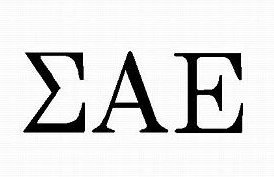
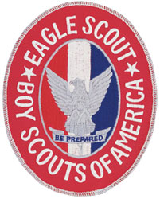

SIMA ALPHA EPSILON
Scholarship Chair
Before I became scholarship chair for Sigma Alpha Epsilon NJ Iota Tau chapter the GPA was under a 3.0 and there was not much professional development. I held resume review sessions, and forumlated study hours and study teams to allow my brothers to reach their highest potential in academics and professionalism. As a result of this our chapter GPA rose by .15 points and many of the brothers now have internships
Philantrophy Chair
Before I took over as philantrophy chair the fraternity raised a total of $30 for philantrophy after commiting hours of tabling. I decided to cut tabling time and increase margins. I bought hats in bulk from china for around $4.5 each. After one month of promoting it on Snap and tabling once to take preorders, we sold all the hats for a $190 profit.
ALPHA KAPPA PSI
Founding Member
Helped found the first professional business fraternity on NJIT campus.
NJIT Student Senate
Computer Science Representative
As the one elected representative for all computer science students at New Jersey Institute of Technology I pursued events to help computer science majors attain internships and develop their career interests, led feedback sessions to notify students about course changes and allow them to interact with department, met with Deans of colleges to discuss changes to their respective colleges and how it would affect students,and voted on $250,000 used on SAFRB proposals to make the NJIT community better for its students and faculty

Boy Scouts of America
Eagle Scout
As one of the 2% of all scouts that attained the highest rank in scouting, I directed a team of 10 volunteers who built: six benches, a fishpond, and refurbished an existing table. Also I was presented an award from my Mayor for my years as a scout and my contributions to the Randolph community